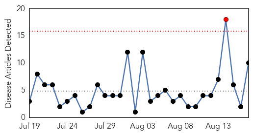

30 Day Trends
Web: 1 alerts, 0 warnings
Twitter: 2 alerts, 0 warnings
Top Articles:
- 0.974
- Meningitis cases linked to World Scout Jamboree
- 0.914
- Meningitis cases surface in Sweden after scout jamboree in Japan
- 0.836
- Tick Bite Gives Rise to Woman Losing Her Precious Limbs
- 0.825
- Meningitis cases in Sweden after Japan scout jamboree
- 0.824
- Meningitis cases in Sweden after Japan scout jamboree
- 0.818
- Meningitis cases in Sweden after Japan scout jamboree
- 0.745
- Reactivate Yaba vaccine lab now, health workers urge Buhari
- 0.733
- Swedish scouts treated after meningitis scare
- 0.733
- Cambridgeshire teenagers urged to get meningitis vaccination before university term starts
- 0.686
- Swedish scouts may have contracted meningitis in Japan - Radio Sweden
Top Tweets:
-
No tweets found for Aug 17, 2015
Web/News Articles
Tweets

Article Locations

Article Confidences